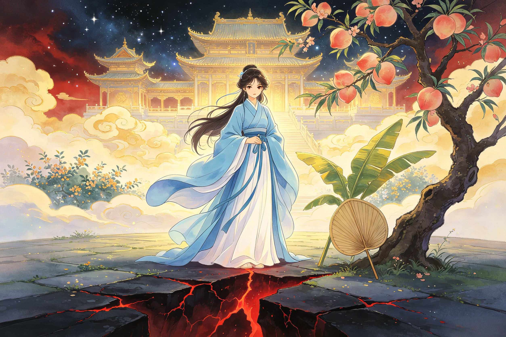

Before the Iron Crown
Before she was the demon queen of Flaming Mountain, she was a celestial being standing at the threshold between two worlds. The complete origin story of Princess Iron Fan — her rakshasa bloodline, her path to becoming a demon immortal, and the choices that forged a queen of iron.
Princess Iron Fan's origins lie in the rakshasa (罗刹) race — fierce, proud demon spirits whose lineage extends back through Hindu-Buddhist cosmology to the ancient epics of South Asia. Rakshasas are shape-shifters, masters of illusion, beings of passion and power who dwell at the boundaries between worlds. They are neither wholly demon nor wholly spirit; they occupy a liminal space where the mortal realm meets the infernal, and their nature reflects this duality. Rakshasa women in particular were legendary across classical Asian literature for their breathtaking beauty, their ferocious independence, and their absolute refusal to submit to male authority — traits that Princess Iron Fan embodies in every fiber of her being. Born into this bloodline, she inherited the dual nature of her kind: the capacity for terrifying violence when challenged and the capacity for profound love when trusted. Unlike many demons who embraced only destruction, she sought from her earliest days to transcend her origins through Taoist cultivation — a choice that set her apart from her rakshasa kin and would eventually make her one of the most complex figures in Chinese mythology. The Bull Demon King, who would later become her husband, emerged from a different demon lineage — he is a bull-spirit (牛精), a being of raw physical power rather than the subtle, shape-shifting magic of the rakshasa. The contrast between their origins would define their relationship and their complementary strengths. Guanyin, the Bodhisattva of Compassion, would later intersect with Princess Iron Fan's life in the most painful way possible — by taking her son — and it is significant that the bodhisattva's mercy did not extend to consulting the mother before claiming the child. Zhu Bajie, too, shares a kinship with Princess Iron Fan in his own way: both are beings caught between worlds, neither fully celestial nor fully demon, forever negotiating the borderlands of identity and belonging in a cosmos that demands every being choose a side.
Through centuries of dedicated Taoist practice, Princess Iron Fan achieved a rare and remarkable status: demon immortal (妖仙, yao xian). This is not a title granted by the celestial bureaucracy of the Jade Emperor's heavenly court — it is earned through self-cultivation, through the refinement of one's own spiritual energy (气, qi) to the point where one transcends the ordinary limitations of demon-kind and approaches something close to divinity. The path was grueling. She meditated in the deepest caves of what would become Plantain Cave, purifying her rakshasa nature not by suppressing it but by refining it — transforming raw demonic power into disciplined spiritual energy. She mastered wind-element magic, learning to draw upon the primordial currents of air that flow between heaven and earth, which would later be amplified a thousandfold by the Banana Leaf Fan. She studied the Taoist classics under the tutelage of mountain spirits and ancient immortals who recognized her potential, absorbing the principles of Laozi's Tao Te Ching and the alchemical wisdom of the Baopuzi. She learned to command the weather spirits of the mountain — the wind gods, the rain lords, the thunder officials who govern the atmosphere. She built her power not through conquest but through discipline, which makes her unique among Journey to the West's demon characters. Most demons in the novel seize power through brute force or inherited authority. Princess Iron Fan earned hers through centuries of practice, study, and spiritual refinement. Taishang Laojun, the Supreme Lord Laozi, whose Eight Trigrams Furnace embodies the pinnacle of Taoist alchemy, represents the celestial tradition she studied — though she learned it far from the celestial court, in the caves and peaks of the mortal realm. Sun Wukong also achieved immortality through Taoist practice — but where she cultivated through discipline, he stole his attainments through trickery and raw talent, stealing the peaches of immortality and the elixir of life rather than earning them through patient cultivation. Nezha, too, is a being who transcended his origins through spiritual transformation — reborn from a lotus flower after his original body was destroyed, he chose a path of celestial service that Princess Iron Fan explicitly rejected. She could have joined heaven's bureaucracy. She chose instead to remain a sovereign of the earthly realm.
How Princess Iron Fan came to rule Flaming Mountain is a story of vision, courage, and the ability to see opportunity where others saw only desolation. The mountain was not always hers. Centuries earlier, when Taishang Laojun's celestial furnace had been damaged during Sun Wukong's rampage through heaven, several bricks of the Eight Trigrams Furnace fell to the mortal realm and crashed into the earth at this spot. Those bricks — each containing the concentrated essence of a primordial fire that had burned since the creation of the cosmos — ignited the surrounding mountains in a conflagration that would never cease. For generations after, the region was uninhabited: too hot for ordinary demons, too dangerous for humans, a no-man's-land of roaring flame and baking stone where nothing could live and nothing could grow. Princess Iron Fan was the first being powerful enough to survive the mountain's heat and the first clever enough to see its strategic value. Who would dare attack a queen whose fortress was guarded by eternal flames? She established Plantain Cave (芭蕉洞) as her palace — a vast natural cave system hidden within the mountain's heart, protected from the fires by a combination of wind-element barriers and deep-earth insulation. She transformed these caves into a court of dark elegance: walls lit by the phosphorescent glow of emerald moss, wind chimes made of mountain crystal that sang in the thermal currents, chambers carved by centuries of patient handwork, a throne room at the deepest level where she received supplicants and dismissed challengers with equal grace. She populated her domain with loyal demon attendants — lesser spirits, fox-women, rock spirits, and fire imps who served her not because she terrorized them but because she was fair. The Banana Leaf Fan, which she either discovered in the deepest chamber of the cave or was gifted by primordial wind spirits who recognized her mastery over their element (the ancient texts disagree on this point), became both her scepter and her ultimate weapon. The Bull Demon King would later become her co-ruler and husband, but the mountain was hers first — claimed by her will, shaped by her magic, and defended by her wind long before any king shared her throne. The Jade Emperor's celestial bureaucracy never formally recognized her sovereignty over Flaming Mountain — but they could not challenge it either, for no army of heaven could march through those flames, and the price of attempting to displace her would have been a war that even heaven was not prepared to fight.
The marriage of Princess Iron Fan and the Bull Demon King was the union of the two most powerful independent demon sovereigns in the mortal realm — an alliance that shook the foundations of the demon world and made the celestial court take notice. Their courtship was not a conquest but a meeting of equals. The Bull Demon King, one of the seven great demon sages and sworn brother of Sun Wukong himself, was a being of titanic physical power, capable of leveling mountains with his horns and commanding the allegiance of lesser demons across a hundred kingdoms. Yet when he sought Princess Iron Fan's hand, he came with respect — a rarity for a demon lord accustomed to taking whatever he wanted. He recognized in her a power that matched his own, a will as unbreakable as his horns, and a domain as formidable as his own mountain fortress. She, in turn, saw in him a partner worthy of her: a being whose strength complemented her magic, whose ambition was tempered by her discipline, and whose fierce loyalty — at least in those early years — promised an alliance that would last through the ages. Their wedding was legendary among demon-kind: a three-day feast at Flaming Mountain attended by demon chiefs from across the realm, by mountain spirits and river dragons, by exiled celestial officials and wandering immortals who crossed the boundaries between worlds. Red Boy (红孩儿, Hong Hai'er) was born soon after — a child who inherited the fire of Flaming Mountain from his mother, the iron will of her rakshasa bloodline, and the titanic strength of his father the Bull Demon King. Red Boy was no ordinary demon child: he could command samadhi fire before he could speak in full sentences, and by the age of three hundred he had established his own territory at Fire-Cloud Cave, commanding a legion of lesser fire demons. For a brief golden age, the three of them were the most powerful family under heaven — feared by the celestial court, respected by the demon world, and untouchable in their mountain fortress. But the tragedy that would eventually shatter them was already in motion. Nezha, whose own family story is one of rebellion against his father and eventual reconciliation, would later face Red Boy in battle — a confrontation between two child warriors of divine and demonic origin that echoed the cosmic tragedy of families divided by the politics of heaven. Erlang Shen, whose mother was a celestial princess who fell to the mortal realm, embodies a parallel tragedy of a family torn between heaven and earth. And Sun Wukong — sworn brother of the Bull Demon King, who would later become the instrument of this family's destruction when he arrived at Flaming Mountain demanding the fan — represents the cruel irony at the heart of their story: their downfall came not from an enemy but from a brother.
Princess Iron Fan was born into the rakshasa (罗刹) race — fierce, proud demon spirits of Hindu-Buddhist origin who shape-shift, master illusions, and dwell at the boundaries between worlds. Rakshasa women in classical Asian mythology are legendary for their beauty, ferocity, and refusal to submit to authority — all traits she embodies. Through centuries of dedicated Taoist cultivation, she achieved the rare status of demon immortal (妖仙, yao xian), transcending the limitations of ordinary demon-kind through discipline and spiritual refinement rather than conquest or inherited power.
She was the first being powerful enough to survive the mountain's perpetual fire and clever enough to recognize its strategic value as an impregnable natural fortress. The mountain was created when Taishang Laojun's furnace bricks fell to earth during Sun Wukong's rampage through heaven. Princess Iron Fan claimed the uninhabited region, established Plantain Cave (芭蕉洞) as her palace, and built her domain through fair leadership — attracting loyal demon followers who respected her justice rather than feared her power. The Banana Leaf Fan, discovered or gifted during this period, became her scepter and ultimate weapon.
Initially, yes — profoundly so. Their marriage was the union of the two most powerful independent demon sovereigns in the mortal realm, a meeting of equals rare in Chinese mythology. The Bull Demon King courted her with respect rather than conquest — a striking departure from typical demon lord behavior. Their wedding was a legendary three-day feast attended by demon chiefs from across the realm. The birth of their son Red Boy marked a golden age for the demon royal family. The tragedy came later, when Guanyin took Red Boy as her disciple without consulting the mother, and when the Bull Demon King abandoned his wife for the younger fox spirit Princess Jade Face.
Dive Deeper